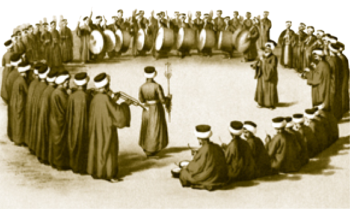

MEHTERHÂNE-İ HÜMÂYÛN
Divan Meydanı’nın sol tarafında ve Has Ahur’un ününde bulunan ve maalesef günümüze ulaşamayan binadır. Mehter dünya tarihinin en eski askerî orkestrasıdır ki temelleri Orta Asya hanlıklarına kadar dayanır. Osmanlı ordusundaki mehter, sefere çıkılmadan önce, sefer sırasında ve savaş esnasında marşlar çalarak askerlere cesaret ve heyecan, karşılarındaki düşmana ise korku verirdi. Savaş zamanları dışında da padişah cülûslarında, kılıç alaylarında, serhatlardan zafer haberleri geldiği vakitlerde, arife divanlarında ve düğünlerde de mehter çalınırdı.
Barış zamanında sarayda padişahın bulunduğu mekânın önünde, seferde ise hükümdar çadırının önünde veya saraydaki Mehterhâne’de ikindi vakti mehter çalarlardı. Marşlar bitince devlet ve padişah için dua okunur ve merasim bitirilirdi.
Evliya Çelebi ise Topkapı Sarayı girişlerinden Demirkapı’daki kuleden sabaha karşı da divan erkânını ve saray civarında yaşayan halkı sabah namazına ve işe uyandırmak için üç fasıl nevbet vurulduğunu kaydeder.
Mehter Harp Duası (Harp Gülbankı) şu şekildedir:
“Eûzubillâh, Eûzubillâh... Hûda’ya şükr-i bîhad,
Lâilâhe illallah! EI-melikü’l-Hakku’l-mübîn!
Muhammedü’r-Resûlullah, Sâdıkü’l-va’dü’l Emîn!
İnnâ Fetehnâ leke fethan mübinâ
Ve yensurekallâhu nasran azîzâ!
Ey pâdişah-ı halifetullah, Es-Selâmu aleyke avnullah!
Sensin hâris-i dîn-i mübîn, hâris-i Şerîatullah!
Uğrun açık olsun ey Pâdişâhım, Emr-i ikbâlin mecid!
Hüdâ kılıcını keskin eylesin, nûr-ı şân satvetine gün gibi medîd!
Rûh-ı pâk-ı Fahri âlemi hoşnûd etsin;
Hak, gazâ-yı ekberin etsin mübarek ve saîd...” denildikten sonra mehterandan güzel sesli biri “Nasrunminallahi ve fethün karib. Ve beşşiri’l-mü’minîn” şeklinde Saff Sûresi’nin 13. âyetini okurdu. II. Mahmud devrinde Vak’a-yı Hayriye neticesinde Yeniçeri Ocağı kaldırılmış, yeniçerileri hatırlattığı için Mehterhâne kapatılmış ve yerine Mızıka Bandosu kurulmuştur. Ne var ki ananenin vereceği moral gücü hesaba katan Genelkurmay, II. Meşrutiyet yıllarında mehter takımını yeniden kurdurmuştur.

Mehter takımı